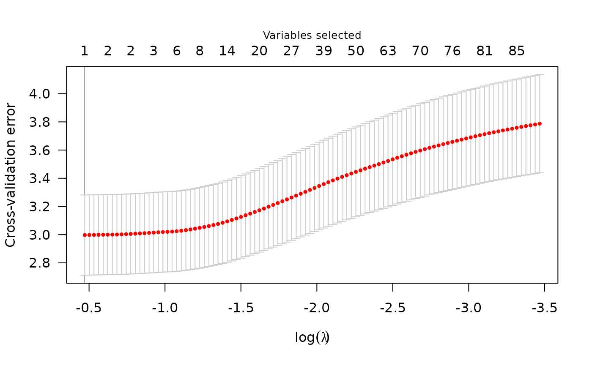

Cross-validation for plmm
cv_plmm.RdPerforms k-fold cross validation for lasso-, MCP-, or SCAD-penalized
linear mixed models over a grid of values for the regularization parameter lambda.
Usage
cv_plmm(
X,
y = NULL,
col_names = NULL,
non_genomic = NULL,
K = NULL,
diag_K = NULL,
eta_star = NULL,
penalty = "lasso",
penalty_factor = NULL,
type = "blup",
gamma,
alpha = 1,
lambda_min,
nlambda = 100,
lambda,
eps = 1e-04,
max_iter = 10000,
convex = TRUE,
dfmax = NULL,
warn = TRUE,
init = NULL,
cluster,
nfolds = 5,
seed,
fold = NULL,
returnY = FALSE,
returnBiasDetails = FALSE,
trace = FALSE,
save_rds = NULL,
save_fold_res = FALSE,
return_fit = TRUE,
compact_save = FALSE,
...
)Arguments
- X
Design matrix for model fitting. May include clinical covariates and other non-SNP data.
- y
Continuous outcome vector. Defaults to NULL, assuming that the outcome is the 6th column in the .fam PLINK file data. Can also be a user-supplied numeric vector.
- col_names
Optional vector of column names for design matrix. Defaults to NULL.
- non_genomic
Optional vector specifying which columns of the design matrix represent features that are not genomic, as these features are excluded from the empirical estimation of genomic relatedness. For cases where X is a filepath to an object created by
process_plink(), this is handled automatically via the arguments toprocess_plink(). For all other cases, 'non_genomic' defaults to NULL (meaningplmm()will assume that all columns ofXrepresent genomic features).- K
Similarity matrix used to rotate the data. This should either be (1) a known matrix that reflects the covariance of y, (2) an estimate (Default is \(\frac{1}{p}(XX^T)\)), or (3) a list with components 'd' and 'u', as returned by choose_k().
- diag_K
Logical: should K be a diagonal matrix? This would reflect observations that are unrelated, or that can be treated as unrelated. Defaults to FALSE. Note: plmm() does not check to see if a matrix is diagonal. If you want to use a diagonal K matrix, you must set diag_K = TRUE.
- eta_star
Optional argument to input a specific eta term rather than estimate it from the data. If K is a known covariance matrix that is full rank, this should be 1.
- penalty
The penalty to be applied to the model. Either "lasso" (the default), "SCAD", or "MCP".
- penalty_factor
A multiplicative factor for the penalty applied to each coefficient. If supplied, penalty_factor must be a numeric vector of length equal to the number of columns of X. The purpose of penalty_factor is to apply differential penalization if some coefficients are thought to be more likely than others to be in the model. In particular, penalty_factor can be 0, in which case the coefficient is always in the model without shrinkage.
- type
A character argument indicating what should be returned from predict.plmm(). If type == 'lp', predictions are based on the linear predictor, X beta. If type == 'blup', predictions are based on the sum of the linear predictor and the estimated random effect (BLUP). Defaults to 'blup', as this has shown to be a superior prediction method in many applications.
- gamma
The tuning parameter of the MCP/SCAD penalty (see details). Default is 3 for MCP and 3.7 for SCAD.
- alpha
Tuning parameter for the Mnet estimator which controls the relative contributions from the MCP/SCAD penalty and the ridge, or L2 penalty. alpha=1 is equivalent to MCP/SCAD penalty, while alpha=0 would be equivalent to ridge regression. However, alpha=0 is not supported; alpha may be arbitrarily small, but not exactly 0.
- lambda_min
The smallest value for lambda, as a fraction of lambda.max. Default is .001 if the number of observations is larger than the number of covariates and .05 otherwise.
- nlambda
Length of the sequence of lambda. Default is 100.
- lambda
A user-specified sequence of lambda values. By default, a sequence of values of length nlambda is computed, equally spaced on the log scale.
- eps
Convergence threshold. The algorithm iterates until the RMSD for the change in linear predictors for each coefficient is less than eps. Default is
1e-4.- max_iter
Maximum number of iterations (total across entire path). Default is 10000.
- convex
(future idea; not yet incorporated) Calculate index for which objective function ceases to be locally convex? Default is TRUE.
- dfmax
(future idea; not yet incorporated) Upper bound for the number of nonzero coefficients. Default is no upper bound. However, for large data sets, computational burden may be heavy for models with a large number of nonzero coefficients.
- warn
Return warning messages for failures to converge and model saturation? Default is TRUE.
- init
Initial values for coefficients. Default is 0 for all columns of X.
- cluster
cv_plmm() can be run in parallel across a cluster using the parallel package. The cluster must be set up in advance using parallel::makeCluster(). The cluster must then be passed to cv_plmm().
- nfolds
The number of cross-validation folds. Default is 5.
- seed
You may set the seed of the random number generator in order to obtain reproducible results.
- fold
Which fold each observation belongs to. By default, the observations are randomly assigned.
- returnY
Should cv_plmm() return the linear predictors from the cross-validation folds? Default is FALSE; if TRUE, this will return a matrix in which the element for row i, column j is the fitted value for observation i from the fold in which observation i was excluded from the fit, at the jth value of lambda.
- returnBiasDetails
Logical: should the cross-validation bias (numeric value) and loss (n x p matrix) be returned? Defaults to FALSE.
- trace
If set to TRUE, inform the user of progress by announcing the beginning of each CV fold. Default is FALSE.
- save_rds
Optional: if a filepath and name without the '.rds' suffix is specified (e.g.,
save_rds = "~/dir/my_results"), then the model results are saved to the provided location (e.g., "~/dir/my_results.rds"). Defaults to NULL, which does not save the result.- save_fold_res
Optional: a logical value indicating whether the results (loss and predicted values) from each CV fold should be saved? If TRUE, then two '.rds' files will be saved ('loss' and 'yhat') will be created in the same directory as 'save_rds'. Both files will be updated after each fold is done. Defaults to FALSE.
- return_fit
Optional: a logical value indicating whether the fitted model should be returned as a
plmmobject in the current (assumed interactive) session. Defaults to TRUE.- compact_save
Optional: if TRUE, three separate .rds files will saved: one with the 'beta_vals', one with 'K', and one with everything else (see below). Defaults to FALSE. Note: you must specify
save_rdsfor this argument to be called.- ...
Additional arguments to
plmm_fit
Value
a list with 11 items:
type: the type of prediction used ('lp' or 'blup')
cve: numeric vector with the cross validation error (CVE) at each value of
lambdacvse: numeric vector with the estimated standard error associated with each value of for
cvefold: numeric
nlength vector of integers indicating the fold to which each observation was assignedlambda: numeric vector of
lambdavaluesfit: the overall fit of the object, including all predictors; this is a list as returned by
plmm()min: The index corresponding to the value of
lambdathat minimizescvelambda_min: The
lambdavalue at whichcveis minmizedmin1se: The index corresponding to the value of
lambdawithin standard error of that which minimizescvelambda1se: largest value of lambda such that error is within 1 standard error of the minimum.
null.dev: numeric value representing the deviance for the intercept-only model. If you have supplied your own
lambdasequence, this quantity may not be meaningful.
Examples
cv_fit <- cv_plmm(X = cbind(admix$race,admix$X), y = admix$y,
non_genomic = 1, penalty_factor = c(0, rep(1, ncol(admix$X))))
print(summary(cv_fit))
#> lasso-penalized model with n=197 and p=102
#> At minimum cross-validation error (lambda=0.1898):
#> -------------------------------------------------
#> Nonzero coefficients: 3
#> Cross-validation error (deviance): 1.17
#> Scale estimate (sigma): 1.083
plot(cv_fit)

# Note: for examples with filebacked data, see the filebacking vignette
# https://pbreheny.github.io/plmmr/articles/filebacking.html